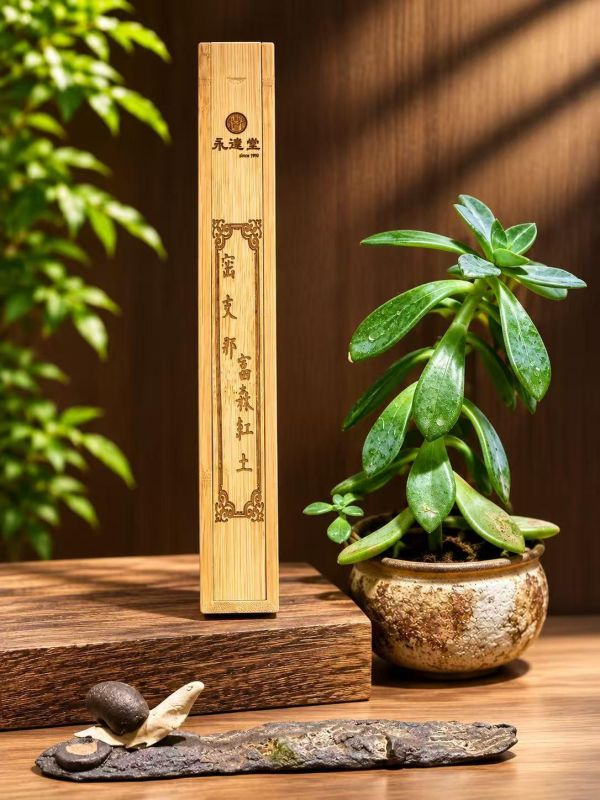
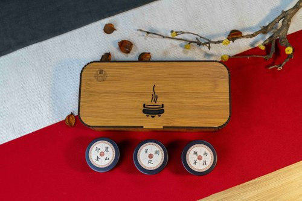

永德堂沉香
SEO 合作提案
讓正在選香的人，讀懂永德堂的專業。

香品知識教育
台中實體門市與線上購買
搜尋到購買的路徑
讓還不認識永德堂、卻正在找香品答案的人，有機會從自然搜尋找到你。
搜尋選購問題
例如「沉香檀香差別」。這個人知道香材名稱，還不確定要買哪種。
找到完整解答
文章回答香材、用途與選購條件，幫他理解差異、縮小選擇。
前往相關商品
讀完可連到永德堂相應分類，查看實際規格、圖片與價格。
詢問、購買或到店
有疑問就透過既有 LINE 聯絡；已決定可購買，想到店則查看門市資訊。
我們改善中間這一段
研究人們會問什麼 → 規劃、撰寫並協作發布文章 → 在內容中放入合適的商品與聯絡入口 → 追蹤哪些問題開始帶來閱讀。
本頁為提案路徑示意。自然搜尋結果不因每次點擊付廣告費；文章製作仍有成本，能否被看見與帶來購買需持續累積與核對。
社群、廣告與文章搜尋
有人看見你才想買，也有人已經有問題、主動搜尋答案。不同管道接住不同時刻。
| 管道 | 香品客人的情境 | 主要工作 | 本案關係 |
|---|---|---|---|
| 社群 | 滑到香品、故事或門市消息，開始產生興趣 | 主動讓人認識品牌、保持互動 | 可與文章互相分享內容 |
| 搜尋廣告 | 搜尋相關字時，看到標示贊助的結果 | 投放預算、設定廣告與承接頁 | 廣告投放另有費用與安排 |
| 文章自然搜尋 | 搜尋「線香推薦」「沉香價格」等，想先弄懂再挑選 | 把問題寫成完整答案，爭取自然搜尋入口 | 本次文章服務的主線 |
文章讓專業有機會在「客人正在問」的時候被找到，也能成為門市解說與社群分享的內容。
自然搜尋需要時間累積，並非文章發布後立即取得排名；各管道的接觸與成交仍需分開記錄。
商品頁與文章的工作
永德堂已經有商品分類與購物功能。文章的用途，是幫還不會選的人理解該看哪一種商品。
商品頁：這款是什麼
提供實際品名、規格、圖片、價格與購買入口。適合已經知道自己要找什麼的人。
文章：我應該怎麼選
把香材差異、型態、搭配器具與使用情境說清楚；回答完，再連到相應商品。
不是每個人都會直接搜尋品牌或商品名。文章把比較中的讀者，接到原本就有的選購入口。
團隊具體工作
以約定篇數的 SEO 文章為主線，從研究、製作到發布後觀察。
研究搜尋需求
核對完整搜尋詞、台灣市場數據與買家正在問的問題。
規劃題目與撰寫文章
交付完整文章，包含標題、段落、比較與選購解答，配合相關商品或詢問連結；同意圖問題合併規劃。
審稿與發布協作
永德堂確認香材、規格與商品事實；團隊依確認內容修改，雙方安排審稿與發布方式。
追蹤與調整方向
觀察文章曝光、點擊與後續動作，作為下一輪內容判斷依據。
文章回答需求，既有官網承接選購。合作範圍以約定文章與工作內容為準。
永德堂已有的搜尋基礎
品牌與在地搜尋已經有入口。這次要擴展的是「還沒決定品牌」的選香與採購問題。
品牌字已能被找到
Ahrefs 關鍵字比較表中，「永德堂」位於第 2 名；同表的「臥香」則由先前第 34 名變為未收錄排名。
「台中沉香」作為在地基礎
本次 Google 實查已見永德堂。這個字平均月量 40，適合肯定已有找店入口；更大的內容機會，還在全台非品牌的選香需求。
已有品牌與門市可以承接，文章再補上香材、比較與使用的答案。
查看工具總覽與在地搜尋實際畫面
香品需求的市場數據
先從需求較大的香材、香品型態與搭配器具看市場，再依永德堂商品決定內容優先順序。
| 完整搜尋詞 | 平均月搜尋量 | 頁首廣告出價低–高（NT$） |
|---|---|---|
| 線香 | 6,600 | 8.30–39.76 |
| 沉香 | 6,600 | 8.95–29.08 |
| 檀香 | 4,400 | 9.36–43.52 |
| 薰香 | 2,400 | 1.32–24.91 |
| 香爐 | 4,400 | 0.85–18.61 |
| 線香座 | 2,400 | 0.72–9.20 |
| 台灣肖楠 | 1,900 | 0.51–19.98 |
| 臥香 | 1,300 | 8.91–34.89 |
| 香環 | 1,000 | 2.66–29.97 |
| 沉香價格 | 720 | 1.21–10.52 |
Google Ads Keyword Planner API
台灣・繁體中文・Google Search・TWD
查詢2026/11/21–22；平均2025/11–2026/10
搜尋量不是可取得的人數或訂單，近似詞不相加。
頁首廣告出價是廣告歷史參考，非 SEO 費用、難度或可節省金額。
例如「線香」有廣泛選購需求；文章再用用途、香材與器具，幫讀者找到適合的品項。
關鍵字與搜尋意圖
量較大的入口與具體選購問題一起規劃；依商品關聯、讀者問題與下一步承接判斷。
研究池 1,087 筆，策展 69 字：51 正式推薦、15 企業／三節條件式推薦、3 使用疑問策略保留。字數不是文章篇數；企業方向須先核對實售品項與採購條件。
選香的人正在比較什麼
「臥香 盤香 差別」的結果以比較與使用指南為主，代表內容要回答選購前的問題。
讀者想知道的答案
- 不同型態適合什麼情境？
- 要搭配什麼器具？
- 規格、用法與預算怎麼比較？
文章可以替商品頁補上選擇理由，讓讀者讀完有方向。
本次結果中的聖寶華 ch2 為既有比較文章，未包含在後續六篇成效統計中。本頁僅說明當次搜尋結果型態。
企業與三節送禮需求
採購者可能先想「送誰、哪個節日、多少預算」，之後才決定要送哪一類禮品。
| 完整搜尋詞 | 平均月搜尋量 | 頁首廣告出價低–高（NT$） |
|---|---|---|
| 過年送禮 | 1,900 | 12.04–31.17 |
| 過年送禮推薦 | 1,300 | 11.26–27.28 |
| 春節禮盒推薦 | 590 | 14.43–31.06 |
| 企業送禮 | 260 | 30.06–80.39 |
| 企業贈禮 | 140 | 26.88–96.20 |
| 三節禮品 | 30 | 尚未取得 |
| 中秋企業送禮 | 30 | 尚未取得 |
| 端午節企業送禮 | 10 | 尚未取得 |
三節是內容情境，搜尋字仍依實際需求選
同樣是送禮，「過年送禮」平均月量 1,900，2026/1 月為 12,100、2 月為 9,900；不同節日與用詞的需求差異很大。文章需要在採購者開始找選擇時已經有完整答案。
香品適合哪些收禮對象、用途及贈禮場合，必須講清楚。依實際品項與供貨條件承接，不把泛送禮的搜尋量全部當成香品客群。
Google Ads API，2026/11/22；台灣繁中 Google Search，平均2025/11–2026/10，出價 NT$。缺出價標示尚未取得；工具回傳低量照實呈現，不以較高歷史量替換。
企業送禮的選擇情境
「企業送禮推薦」的結果同時有禮盒、生活用品與挑選指南，讀者還在比較什麼適合送。
文章先回答採購者的問題
- 送給客戶、員工，還是特定長輩？
- 對方是否有用香習慣，香品適合嗎？
- 預算、數量、包裝與到貨時間如何安排？
把香品放進適合的贈禮情境，讓有興趣的採購者帶著條件來詢問。
香品供應、包裝與數量依永德堂實際條件確認。此處是選題方向，未承諾客製包裝或大宗供應服務。
搜尋需求對應文章方向
一篇文章處理一組完整問題，同意圖的近似字合併，讓讀者更容易做選擇。
| 完整需求例子 | 文章方向 | 要回答什麼 | 下一步 |
|---|---|---|---|
| 沉香是什麼／沉香種類 | 沉香入門選購指南 | 名稱、種類與選購條件 | 相關香品分類 |
| 沉香檀香差別 | 沉香與檀香怎麼選 | 香材差異、喜好與使用情境 | 對應香品與詢問 |
| 臥香／臥香用法／盤香 | 臥香與盤香選擇指南 | 規格、器具、使用方式 | 臥香與盤香分類 |
| 沉香價格／惠安沉香價格 | 影響香品價格的選購條件 | 實售品項、規格與比較基準 | 商品頁實際價格 |
| 台中沉香／沉香哪裡買 | 台中選購沉香前的準備 | 要詢問的商品條件、門市資訊 | 門市／LINE |
| 線香／線香推薦／線香座 | 線香選購與器具搭配 | 香材、型態、搭配條件與常見疑問 | 實售香品與器具 |
| 企業送禮／過年送禮推薦 | 三節與企業贈禮選擇指南 | 送禮對象、預算、適用性與採購條件 | 合適禮品與詢問 |
以上為選題方向示例，正式題目依主推商品與資料審稿確認；沒有把每個字都當成一篇文章。
文章之後的購買與到店
每一種閱讀需求，都要有一個清楚、可實際使用的下一步。
已知道要買什麼
文章連到對應分類及商品，讓讀者查看實際規格與價格，再使用既有購物流程。
還需要問清楚
連到官網既有官方 LINE，讓讀者帶著用途與預算詢問。
想去台中門市
提供官網已公開的地址、電話與地圖入口，協助確認到店資訊。
追蹤「看完之後做了什麼」，才能逐步判斷內容是否接近生意。
LINE、電話或導航點擊只代表動作；實際詢問、到店與訂單仍需紀錄核對。追蹤方式須配合現有平台權限與可用資料。
一篇沉香文章如何接到商品
先回答沉香入門與比較問題，再提供分類、商品及聯絡入口。
2026/8/27 上線 截至2026/11/21：26,444 次曝光／203 次點擊
展開對永德堂的啟發
以永德堂實際販售的香材、香品規格與常見問題來寫，連到既有分類或商品；準備到店的人則提供門市資訊。借鏡完整回答與接續動作，不複製聖寶華的品牌故事或商品承諾。
分析的是目前可閱讀的文章結構，無法據此認定每個現行段落都是歷史表現的原因。文章點擊不等於成交。
聖寶華六篇文章的實際貢獻
在原本良好的網站基礎上，六篇香品文章帶來可核對的搜尋曝光與點擊。
六篇文章與已取得月份
每篇上線時間不同，累積曝光與點擊需要搭配發布日期一起看。
| 文章主題／原文 | 上線日期 | 累積曝光 | 累積點擊 |
|---|---|---|---|
| 檀香 | 2026-08-27 | 15,685 | 166 |
| 沉香 | 2026-08-27 | 26,444 | 203 |
| 惠安沉香 | 2026-09-17 | 3,953 | 63 |
| 老山檀香 | 2026-10-13 | 5,889 | 182 |
| 臥香 | 2026-11-09 | 564 | 9 |
| 台灣肖楠 | 2026-11-09 | 2,837 | 68 |
展開已取得月份的曝光與點擊
月資料目前可核對 10 月與 11 月。8、9 月分項尚未取得，因此保留缺口，不呈現為六篇全期完整趨勢。
| 月份 | 曝光次數 | 點擊次數 | 資料範圍 |
|---|---|---|---|
| 2026-08 | 尚未取得 | 尚未取得 | 8/27起，不完整月份；月分項尚未取得 |
| 2026-09 | 尚未取得 | 尚未取得 | 月分項尚未取得 |
| 2026-10 | 15571 | 190 | 完整月份 |
| 2026-11 | 20276 | 257 | 截至11/21，未滿月 |
月度資料與全期累積並非完整對帳序列，不以月資料相加代替 前頁六篇累積數字。11 月未滿月，不直接做完整月成長比較。
豐滄的企業贈禮文章
先解答採購者怎麼挑，再提供禮品與詢問入口。食品禮盒的做法，可借鏡送禮內容如何組織。
2025/10/23 發布，至2026/11/15：22,120 次曝光／415 次搜尋點擊
這篇文章做了什麼
先整理三節與企業送禮時機，再比較對象、實用性、預算與包裝等條件；讀者看到選項及適用情境後，可繼續查看企業贈禮介紹。
對永德堂的啟發
把「香品適合送誰、為什麼合適、需要先確認什麼」解釋清楚，再接實際禮品或聯絡入口。食品與香品的接受度、用途及供應條件不同，不直接移用對方商品承諾。
兩篇依各自上線日起累計至2026/11/15，為文章搜尋表現，並非訂單。分析現行文章結構，不認定每個段落造成歷史成果，也不把案例成果當成本案保證。
查看豐滄整站背景與每月曝光／點擊
全站 GSC 2025/7/16–2026/11/15：1,150,214 次曝光／43,850 次點擊。下圖呈現整站背景，不能全部歸因於上列兩篇文章。保留2026/10下滑及首尾不完整月份。
| 月份 | 曝光次數 | 點擊次數 | 月份範圍 |
|---|---|---|---|
| 2025-07 | 8,853 | 615 | 7/16–7/31 |
| 2025-08 | 24,481 | 1,276 | 完整月 |
| 2025-09 | 28,980 | 1,496 | 完整月 |
| 2025-10 | 27,933 | 1,372 | 完整月 |
| 2025-11 | 37,024 | 1,674 | 完整月 |
| 2025-12 | 65,824 | 2,365 | 完整月 |
| 2026-01 | 85,366 | 2,636 | 完整月 |
| 2026-02 | 68,876 | 1,764 | 完整月 |
| 2026-03 | 75,653 | 2,226 | 完整月 |
| 2026-04 | 71,617 | 2,501 | 完整月 |
| 2026-05 | 76,020 | 2,329 | 完整月 |
| 2026-06 | 74,152 | 2,551 | 完整月 |
| 2026-07 | 104,959 | 4,418 | 完整月 |
| 2026-08 | 134,275 | 6,054 | 完整月 |
| 2026-09 | 149,554 | 6,815 | 完整月 |
| 2026-10 | 61,253 | 2,098 | 完整月 |
| 2026-11 | 55,394 | 1,660 | 11/1–11/15 |
製作流程與內容節奏
先對齊商品與資料，審稿確認後發布，讓內容有時間累積搜尋表現。
方向對齊
確認主推商品、讀者問題與優先關鍵字。
撰稿與確認
團隊撰稿，永德堂核對香材、規格、圖片與商品事實。
安排發布
對齊上稿方式與審稿節奏，網站正式上線後每月一篇。
觀察與調整
至約定總篇數完成；持續依多月資料討論經營方向。
瑪卡鎷網路行銷
研究搜尋、規劃題目、撰寫約定文章、協作發布與追蹤內容表現。
永德堂沉香
提供商品與品牌資料、確認專業事實，配合審稿與實際詢問／成交資訊。
啟動時安排具體交稿與審稿日期。服務期間與文章總量分別約定，不代表全服務期間每月都有新文章。
成效如何一起追蹤
先把交付與搜尋成效看清楚，再核對是否出現有效詢問和購買。
交付進度
文章完成、審稿與上線紀錄。知道本期實際做了什麼。
搜尋表現
文章曝光、點擊與非品牌查詢；按上線時間及多月變化觀察。
商業行動
商品頁前往、LINE／電話／導航動作，與實際詢問、訂單分開記錄。
每次討論都回到具體資料
哪篇開始被搜尋到？哪些問題有點擊？讀者接著去哪裡？若有詢問卻未購買，再共同核對商品條件與承接流程。
用累積趨勢判讀
考量文章上線時間、季節與搜尋環境，不以固定三個月排名驗收合作成敗，也不承諾特定排名或成交量。
三種合作方案
比較合約總價、文章總量與付款安排，選擇適合永德堂的合作期間。
三方案皆未稅。每期付款與平均月投入不同；三年方案付款 24 期、服務 36 個月。選擇僅用於比較，不代表簽約或送出訂單。
所選方案的期間與文章總量
內容依約定總篇數累積，服務年期不等於每個月都有新文章。
請先在合作方案頁選擇一年、兩年或三年方案。
共同的製作方向
對齊主推商品與可用資料，安排審稿、發布與觀察節奏。網站正式上線後每月一篇，至所選方案的文章總量完成。
文章完成後，依服務期間及實際資料討論既有內容表現與後續經營方向。商城重建、全站商品重寫等額外作業，須另外確認範圍。
合作下一步
從主推商品與文章優先順序開始，讓永德堂的專業有更多被找到的入口。
- 選擇合作年期與文章總量
- 對齊主推香品與現有資料
- 排定製作、審稿與發布節奏
先把文章做好、把下一步接清楚，再一起看實際表現。
瑪卡鎷網路行銷

文章貢獻可以量化，整站成長需要分開判讀
同期全站曝光 153,628 次、點擊 3,977 次。占比說明文章在同期間的貢獻，沒有把全站表現全部歸因於六篇文章。
這個案例可借鏡香品知識如何成為搜尋入口；永德堂仍須依自己的商品、門市與實際數據累積成果。